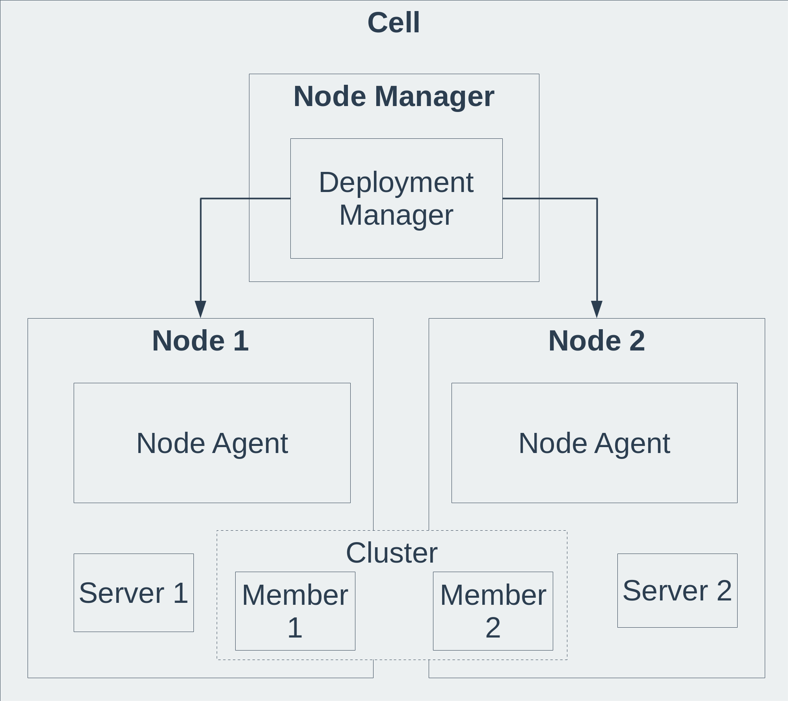
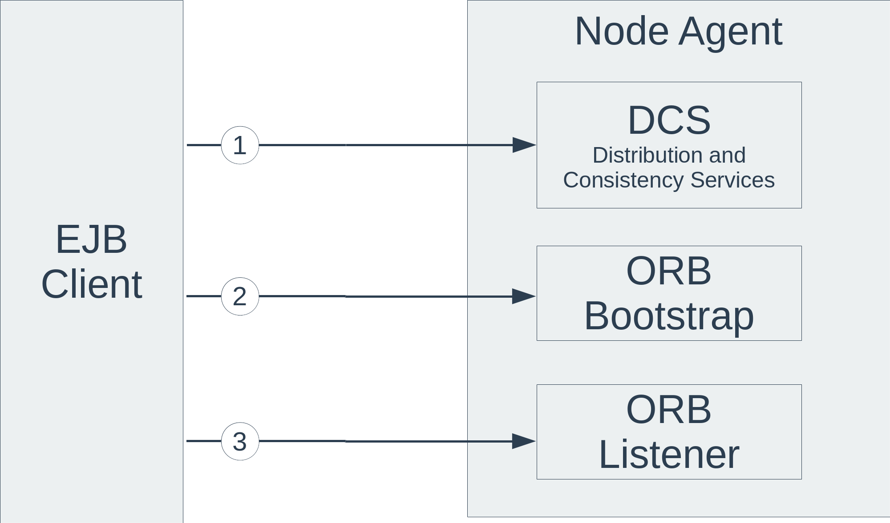

Websphere Application Server is a middleware from IBM that hosts Java based web applications.
Websphere Application Server
There are seven WAS editions in the market.
- Liberty Core (free and Open Source)
- Express
- Base
- Network Deployment
- Hypervisor Edition
- z/OS
- Developers
Below, an illustration of installation of WAS Network Deployment:

RMI/IIOP
Java RMI/IIOP (Remote Method Invocation over Internet Inter-ORB Protocol) is part of the Java 2 Platform. This is a protocol similar to RPC (Remote Procedure Call) often used with EJB (Enterprise Java Bean) and WAS (Websphere Application Server).
This protocol is quite complex and it is difficult to find relevant and synthetic information. So, it's time to write a quick post just before I forget everything.

- Flow #1: is only required in WAS Network Deployment clustered instance to find the Bootstrap server. DCS is part of High Availability Manager and/or Work Load Manager.
- Flow #2: first locate request to the ORB Bootstrap port
- Flow #3: second locate request to the ORB listener port
For more information : Understanding how EJB calls operate in WebSphere Application Server V6.1